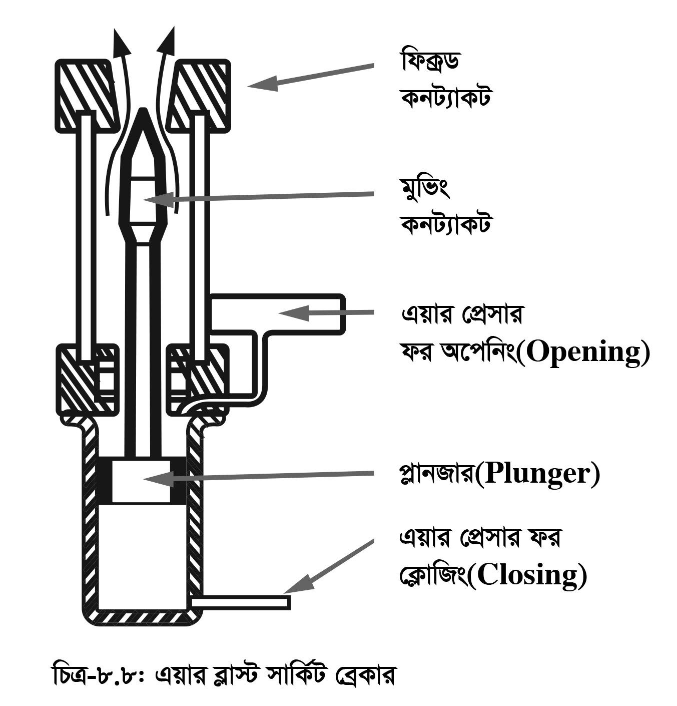

<div class="content">
    <div class="scroller">
        <p class="page-no">145</p><br><br>
        <h2></h2>

        <style>
            /*span{*/
                /*font-size: 1.2em;*/
                /*line-height: 34px;*/
            /*}*/
            table {
                border-collapse: collapse;
            }

            table{
                border: 1px solid #ddd;
            }

            td {
                border-left: 1px solid #ddd;
            }

            table {
                width: 100%;
            }

            th {
                height: 50px;
            }

            th, td {
                padding: 15px;
                text-align: center;
            }
        </style>

        <span><b>(ঘ) এয়ার ব্লাস্ট সার্কিট ব্রেকার (এসিবি) (Axial Flow Air Circuit Breaker):</b></span><br/><br/>

        <p style="padding: 0;">
            এয়ার ব্লাস্ট সার্কিট ব্রেকারের আর্ক নির্বাপণ, একে খোলা এবং বন্ধ করা সব কাজই উচ্চ চাপের বাতাসের দ্বারা সম্পন্ন হয়ে থাকে। সার্কিট ব্রেকারের চলনশীল কণ্টাক্ট এর নিচের অংশ পিস্টনের আকৃতি বিশিষ্ট যা ব্রেকার চেম্বারকে তিন ভাগে বিভক্ত করে। নিচের চেম্বারটি সার্কিট ব্রেকারকে বন্ধ করার জন্য, মধ্যের চেম্বারটি অস্বাভাবিক অবস্থায় ব্রেকার খোলার জন্য এবং উপরের চেম্বারটি আর্ক-নির্বাপণের জন্য ব্যবহৃত হয়। নিচের চেম্বার যে নল দ্বারা চাপের বাতাস  আসে তাকে ক্লোজিং ইনলেট বলে। মাঝের এ উপরের চেম্বারে যে নল দ্বারা বাতাস আসে তাকে ওপেনিং ইনলেট বলে।
        </p>

        <div>

            <p style="padding: 0;">   <b>কার্যপ্রণালি:</b>

                সার্কিট ব্রেকার বন্ধ করার সময় ক্লোজিং ইনলেট দিয়ে
                উচ্চ চাপের বাতাস ঢুকানো হয়। বায়ুর চাপে
                চলনশীল কণ্টাক্ট উপরে উঠে যায় এবং এর উপরের
                প্রাপ্ত স্থির কণ্টাক্ট দুটির মাঝখানে ঢুকে সার্কিট
                ব্রেকারকে বন্ধ করে। সার্কিটের অস্বাভবিক অবস্থায়
                ওপেনিং ইনলেট দিয়ে বাতাস মাঝের ও উপরের
                চেম্বারে ঢোকে। মাঝের চেম্বারের বাতাস চলনশীল
                কণ্টাক্টকে চাপ দিয়ে নিচে নামিয়ে দেয় ফলে
                চলনশীল কণ্টাক্ট স্থির কণ্টাক্ট হতে বিচ্ছিন্ন হয়।
                বিচ্ছিন্ন হওয়ার সময় যে আর্কের সৃষ্টি হয় তাকে
                উপরের চেম্বারের প্রবেশকৃত উচ্চচাপের বাতাস
                বাইরের দিকে উড়িয়ে নিয়ে যায়।

            </p>


            <p class="c-align">
                
            </p>

            <p class="c-align">চিত্র-৮.৮ এয়ার ব্লাস্ট সার্কিট ব্রেকার
                <!--<span class="tooltip_my">-->
								<!--<i class="fa fa-play-circle video-class" videosrc="videos/145/145-anim-102.mp4" style="font-size: 20px;" aria-hidden="true"></i>-->
								<!--<span class="tooltiptext">-->
										<!--click here to see the video-->
								<!--</span>-->
							<!--</span>-->
            </p>

        </div>

        <div style="clear: both;"></div>

        <p style="padding: 0;">পুনরায় সার্কিট ব্রেকার কাজ করতে হলে নিচের চেম্বারের ক্লোজিং ইনলেট দিয়ে উচ্চ চাপের বাতাস প্রবেশ করাতে হয়। এভাবে এসিবি কাজ করে থাকে। </p><br/><br/>

        <p style="padding: 0;"><b>ব্যবহার: </b>ইন্ডাস্ট্রিয়াল সুইচগিয়ারে প্রচুর ব্যবহার হয়। এটি ছাড়াও জেনারেটিং স্টেশনে অক্সিলারি সুইচগিয়ারেও
              ব্যবহার হয়। এ সি ও ডি সি সার্কিটে 15 kV পর্যন্ত ব্যবহার করা যায়।
        </p><br/><br/>

        <span><b>সুবিধাসমূহ (Advantages):</b></span>

        <div>
            <h4 class="topic-title-no">১।</h4>
            <p>এটি খুব দ্রুত কাজ করে।
            </p>
        </div>

        <div>
            <h4 class="topic-title-no">২।</h4>
            <p>এত দাহ্য পদার্থ না থাকায় কোনো বিস্ফোরণের ঝুঁকি নেই।
            </p>
        </div>

        <div>
            <h4 class="topic-title-no">৩।</h4>
            <p>আর্ক নির্বাপণের ক্ষমতা বেশি।
            </p>
        </div>

        <div>
            <h4 class="topic-title-no">৪।</h4>
            <p>কণ্টাক্টসমুহ খুব কম নষ্ট হয়।
            </p>
        </div>

        <div>
            <h4 class="topic-title-no">৫।</h4>
            <p>কণ্টাক্ট পয়েন্টসমূহ বদলানো সহজ।
            </p>
        </div>

        <div>
            <h4 class="topic-title-no">৬।</h4>
            <p>তুলনামূলকভাবে এর ওজন কম।
            </p>
        </div>

        <div>
            <h4 class="topic-title-no">৭।</h4>
            <p>এটি উচ্চ ক্ষমতাসম্পন্ন করে তৈরি করা যায়।
            </p>
        </div>

        <br/><br/><span><b>অসুবিধাসমূহ (Disadvantages):</b></span>

        <div>
            <h4 class="topic-title-no">১।</h4>
            <p>এতে ইলেকট্রিক মোটর, এয়ার কম্প্রেসর ও এয়ার টাইট টিউবসহ একটি সম্পূর্ণ করা বায়ু রাখার ব্যবস্থা  করতে হয়।
            </p>
        </div>

        <div>
            <h4 class="topic-title-no">২।</h4>
            <p>এর প্রাথমিক খরচ বেশি।
            </p>
        </div>

        <div>
            <h4 class="topic-title-no">৩।</h4>
            <p>এর গঠন তুলনামূলকভাবে জটিল।
            </p>
        </div>

        <div>
            <h4 class="topic-title-no">৪।</h4>
            <p>এটি রক্ষণাবেক্ষণের জন্য দক্ষ জনবলের প্রয়োজন হয়।
            </p>
        </div>

        <div>
            <h4 class="topic-title-no">৫।</h4>
            <p>রিস্ট্রাইকিং ভোল্টেজের জন্য খুব স্পর্শকাতর হয়।
            </p>
        </div>

        <div>
            <h4 class="topic-title-no">৬।</h4>
            <p>পাইপ লাইনে এয়ার লিকেজের সম্ভাবনা থাকে।
            </p>
        </div>

        <br/><br/><span><b>এয়ার ব্রেক সার্কিট ব্রেকারের রেটিং: </b>এয়ার ব্রেক সার্কিট ব্রেকারের রেটিং নিচে দেওয়া হলো:</span>

        <table>
            <tr>
                <td>460 V,</td>
                <td>400-3500 A,</td>
                <td>40-75 kVA</td>
            </tr>
            <tr>
                <td>3.3 kV,</td>
                <td>400-3500 A,</td>
                <td>13.1 – 31.5 kVA</td>
            </tr>
            <tr>
                <td>6.6 kV,</td>
                <td>400-3400 A,</td>
                <td>13.1 – 20 kVA</td>
            </tr>
        </table>

    </div>
</div>